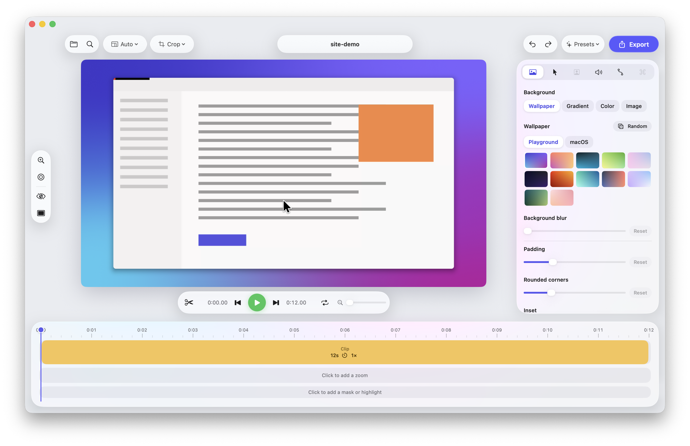

Record your Mac and get a polished video automatically — zooms that follow your clicks, a silky cursor and a beautiful background. Free, native and private.

Exported straight from Screen Playground — no manual editing. Zooms follow the clicks, then ease back out.
Record raw, then shape it in the editor. Nothing is baked in until you export.
Zooms follow your clicks so viewers always see what matters. Tune timing, aim them by hand, or use the glass loupe.
Jittery mouse movement becomes a smooth glide, re-drawn sharp at any size, with click effects and motion blur.
Wallpapers, gradients, padding, rounded corners and shadows, in 16:9, 9:16, square and more.
Split, trim and ripple delete; speed up slow parts; blur sensitive areas; full undo.
Add a webcam bubble or split-screen, your voice, system audio and background music.
MP4 up to 4K at 60 fps, GIF or ProRes — or copy straight to the clipboard and paste into Slack.
From recording to a share-ready video in under a minute.
Press ⌥⌘↩ anywhere and pick a display, a window or an area.
The editor opens with zooms already added. Tweak the style or keep the defaults.
Export a file or copy the video to your clipboard.
No account, no watermark, no tracking. Your recordings never leave your Mac.